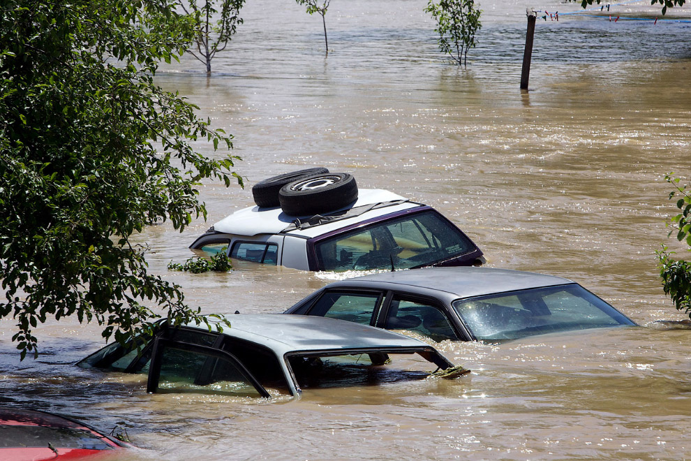
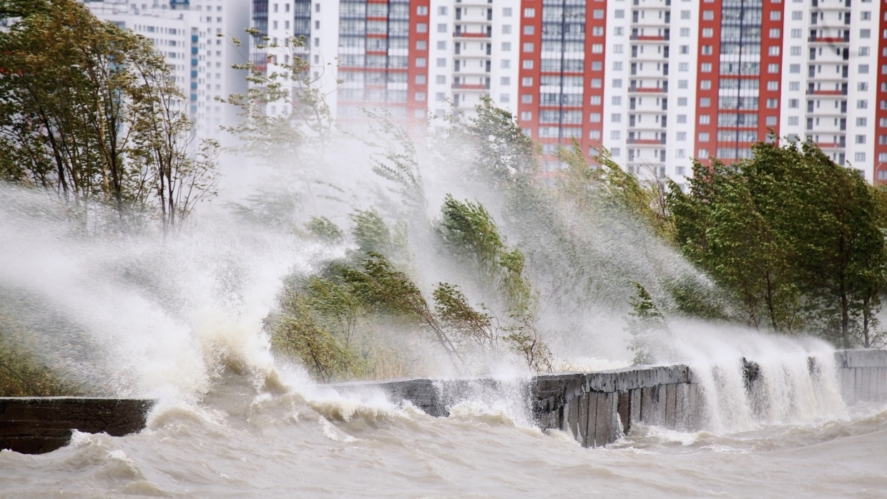

Наводнения – это значительные затопления местности, возникающие в результате подъема уровня воды в реке, в водохранилище или в озере. Причинами наводнений являются обильные осадки, интенсивное таяние снега, прорыв или разрушение дамб и плотин. Наводнения сопровождаются человеческими жертвами и значительным материальным ущербом.
По повторяемости и площади распространения, наводнения занимают первое место в ряду стихийных бедствий, по количеству человеческих жертв и материальному ущербу наводнения занимают второе место после землетрясений. Ни в настоящем, ни в ближайшем будущем предотвратить их целиком не представляется возможным. Наводнения можно только ослабить или локализовать. • Половодье. Катастрофы, которые относятся к этому виду, возникают вследствие при таяния весеннего снега в гористой или на равнинной местности. Этот тип считается самым безопасным, ведь разруха от таяния не несёт за собой особых последствий. А вот повышение уровня воды в водоёмах в конечном итоге может привести к трагедии.  • Наводнения зажорного и заторного типов. Они происходят, когда создаётся сопротивление потоку воды в какой-то определённой области русла. В основном подобное может происходить из-за значительного скопления льда в узких частях русла в период ледостава (зажоры) или ледохода (заторы). Заторное наводнение берёт своё начало в конце зимы или начале весны, при этом подъём воды является довольно значительным, хоть и продолжительностью данный вид не выделяется. Зажорное наводнение, наоборот, начинается несколько раньше и приходится на первые холода. По продолжительности оно может достигать двух месяцев, за которые уровень воды повышается медленно, но стабильно. • Паводок. Считается самым частым из всех остальных видов. Из основных факторов образования можно выделить слишком обильное количество осадков или зимние оттепели, которые в конечном итоге повышают уровень воды. Определённой периодичностью не отличается, в отличие от половодья или заторов. По большей степени паводок длится не особо долго, но при этом уровень воды за этот промежуток времени может значительно увеличиться. • Нагонные наводнения. Причиной их появления можно назвать результат сильных ветров, которые нагоняют обильное количество воды в устья рек. Также они могут возникать на открытых участках водохранилищ, побережьях морей и крупных озёр, поскольку именно в подобной местности ветер будет всегда сильнее. От времени года не зависят и предсказать их практически невозможно. Во время нагонных наводнений уровень воды значительно повышается. • Прорыв плотины, за которым следует резкий выброс огромного количества воды. Как мы все знаем, плотину возводят для того, чтобы остановить слишком сильные течения и ограничить водоём, сделав из него водохранилище, например. В том случае, если плотина прорывается, тонны воды с большой скоростью изливаются из водоема или водохранилища по причине прорыва напорной конструкции (дамбы, плотины и т.д.) или аварийного сброса воды. Другой причиной может являться и вполне естественный прорыв плотины, на который влияют природные факторы: оползни, обвалы и прочие события, способные уничтожить строение. В ходе катастрофы образуется волна прорыва, затопляющая огромные территории и повреждающая или разрушающая объекты (сооружения, здания и др.), встречающиеся на пути ее движения. 